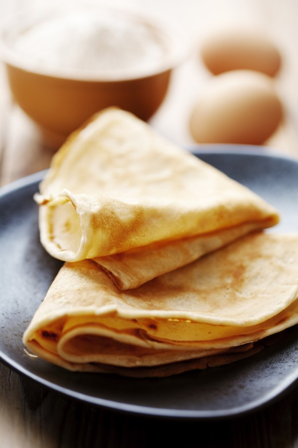
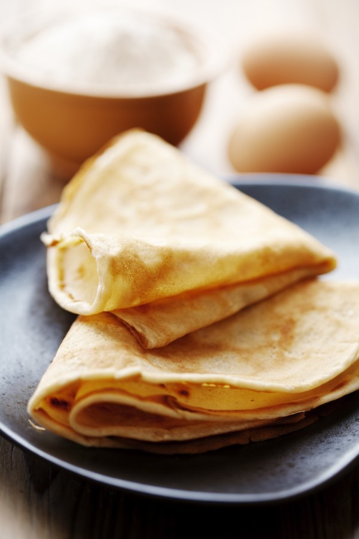

Pâte à crêpe simple
Selon nos informations, cette recette est compatible avec le régime suivant : végétarien
TEMPS TOTAL : 17 MIN
 


Ingrédients
- - 5 oeufs
- - 500 g de farine
- - 1 litre de lait demi-écrémé
- - 3 cuillères à soupe d'huile
- - 1/2 verre de bière
Préparation
Etape 1
Dans un saladier verser la moitié de la farine, puis rajouter les oeufs un à un, rajouter ensuite un peu de lait puis de la farine puis à nouveau du lait et ainsi de suite.
Etape 2
Enfin rajouter l'huile et la bière.
Etape 3
Laisser reposer 1 heure, votre pâte est prête.